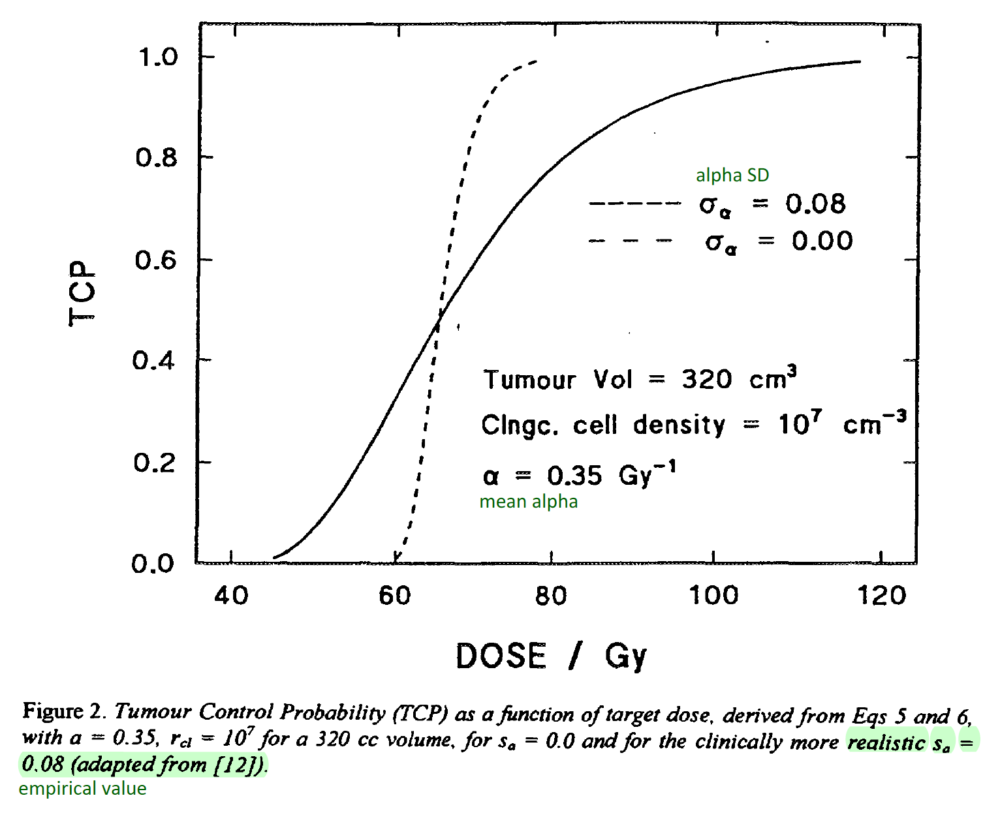

- Direct Attack
- Indirect Attack
- water ionised > Free Radical
Linear Energy Transfer
- affect the proportion of direct/indirect attack to cells
High LET
(e.g. p+, carbon ion)Direct Dominated (in ~10-15 s) Low LET
(e.g. photon, e-)1/3 Direct
2/3 Indirect (in ~10-12 - 10-9 s)
\[ LET = \frac{dE}{dl} \]
unit: keV/μm
| α | ~ 100 keV/μm | |
| 14 MeV n | 12 keV/μm | |
| 1 keV e- | 12.3 keV/μm | |
| 10 keV e- | 2.3 keV/μm | High LET |
|
|
||
| 250 kVp X-ray | 2 keV/μm | Low LET |
| 3 MeV X-ray | 0.25 keV/μm | |
H2O → H2O+ + e-
where,
H2O+ = radical cation
H2O+ + H2O → OH* + H3O+
- single strand
- might be repaired
- double strand
Chain of Subsequent Events
Radiation |
|
| ↓ |
ionisation/excitation |
|
Molecular Change |
|
| ↓ | |
|
Subcellular Change |
→ Cell Repair |
| ↓ |
mutation |
|
Cellular Change |
|
| ↓ ↓ | |
|
Cell Death
Modified Cell
|
|
| ↓ ↓ | |
|
Tissue Malfunctioning
Cancer / Hereditary Effect
|
|
| ↓ | | |
|
Organ Malfunctioning
|
|
|
| ↓ ↓ | |
|
Deterministic Effect
Stochastic Effect
|
Deterministic/Stochastic
- Deterministic
- Threshold Dose
- ↑ Dose → ↑ Severity
- ↑ Dose in ↓ Time
- Stochastic
- NO threshold
- Late effect
- ↑ Dose → ↑ probability of developing a disease
- frequency ∝ radiation received by the cell
- frequency of lymphocytes in peripheral blood
= biological dosimeter for D>25 cGy
Radiosensitivity increases under certain conditions:
-
Biological factors
- mitotic
- undifferentiated
- filled with sensitiser/protector
- (human) young/aged
- dose ↑
- LET ↑
- volume irradiated ↑
e.g. oxygen → sensitiser
where
Dref = dose for Co-60 γ to produce certain certain biological effect
Dtest dose for a type of radiation to produce the same biological effect
Dtest dose for a type of radiation to produce the same biological effect
Before interpreting the RBE value, be aware of:
- the chosen biological endpoint
(e.g. dose to kill 50% of mice in a group? other percentage, other symptoms? ) - dose in fraction / the duration of irradiation
- dose rate
Relationship with LET
- in general, LET ↑ RBE ↑
- when LET is too large, radiation might be sterilising limit amount of cells, limiting the RBE [5]

For conventional 2 Gy/fr RT,
\[ S = \large e^{-(\alpha d + \beta d^2)}\]
where
| S = Survival Fraction | = Reproductive death |
| \( \alpha d \) = Double Strand Break Dominant | Cell kill even at low dose/fr |
| \( \beta d^2 \) = Single Strand Break Dominant | ↑ dose/fr, ↑ probability of cell kill |
| \(\alpha\) = initial slope | |
| \(\beta\) = degree of curvature |
Rearrange, \[ \large S = e^{- \alpha~d \left( 1 + {d \over \alpha/\beta} \right) }\]
where
| Tumour | \( {(\alpha/\beta)}_{tumour} \) ~ 10 Gy | repair slower → survival curve steeper → die faster |
| Normal Tissue | \( {(\alpha/\beta)}_{normal~tissue} \) ~ 3 Gy |
For fractionated RT, \[ \large S_{tot} = e^{- \alpha~d_1 \left( 1 + {d_1 \over \alpha/\beta} \right)} e^{- \alpha~d_2 \left( 1 + {d_2 \over \alpha/\beta} \right)} ... \] If D in every fraction are the same, i.e. \( d = d_1 = d_2 =~... \), \[ \large S_{tot} = e^{- n~\alpha~d \left( 1 + {d \over \alpha/\beta} \right) }\]
where
\( BED = n~d~\left( 1 + {d \over \alpha/\beta} \right)\ \)
Repopulation
BED accounting for repopulation:
\( BED = n~d~\left( 1 + {\Large \frac{d}{\alpha/\beta} } \right) - \left( { \Large \frac{ln(2)~T}{\alpha~T_{pot}} } \right) \)
\( k = \Large \frac{ln(2)}{\alpha~T_{pot}} \)
∴ \( BED = n~d~\left( 1 + {\Large \frac{d}{\alpha/\beta} } \right) - k~T \)
\( BED = n~d~\left( 1 + {\Large \frac{d}{\alpha/\beta} } \right) - \left( { \Large \frac{ln(2)~T}{\alpha~T_{pot}} } \right) \)
\( k = \Large \frac{ln(2)}{\alpha~T_{pot}} \)
∴ \( BED = n~d~\left( 1 + {\Large \frac{d}{\alpha/\beta} } \right) - k~T \)
Kick-in Time
\( BED = n~d~\left( 1 + {\Large \frac{d}{\alpha/\beta} } \right) - k~(T-T_k) \)
Window of Opportunity

= the probability of clonogenic tumour cells are killed
= sigmoid shape
many models trying to characterise the curve
> in general involve
> \(N_0\) = initial number of clonogenic tumour cell
\(\alpha\) = uniform radiosensitivity (Gy-1 ), assuming cells are irradiated uniformly
\(D\) = prescription dose
Basic Model
More Sophisticated Model
= sigmoid shape
many models trying to characterise the curve
> in general involve
> \(N_0\) = initial number of clonogenic tumour cell
\(\alpha\) = uniform radiosensitivity (Gy-1 ), assuming cells are irradiated uniformly
\(D\) = prescription dose
Basic Model
When number of clonogenic tumour cells drop to 0, the TCP should be 1.
The more number of tumour cells, the smaller the probability of controlling the tumour, hence, \[ TCP = \Large e^{-N_s} \] \[ \qquad\qquad\qquad\qquad\quad = \Large e^{ - \left( N_0 ~ e^{-(\alpha d + \beta d^2)} \right) } \] HOWEVER, this sigmoid curve is unrealistically steep when compared to empirical data.
The more number of tumour cells, the smaller the probability of controlling the tumour, hence, \[ TCP = \Large e^{-N_s} \] \[ \qquad\qquad\qquad\qquad\quad = \Large e^{ - \left( N_0 ~ e^{-(\alpha d + \beta d^2)} \right) } \] HOWEVER, this sigmoid curve is unrealistically steep when compared to empirical data.
More Sophisticated Model
A more sophisticated model incorporates the basic survival model with
1. tumour-type-specific radiosensitivity \(\alpha\) → represented by mean of \(\alpha\)
2. inter-patient differences in \(\alpha\) → represent by SD of \(\alpha\)
3. tumour volume
4. clonogenic cell density
( \(\beta\) is relatively insignificant in 2 Gy/fr scheme, ∴ ignore it here)
1. tumour-type-specific radiosensitivity \(\alpha\) → represented by mean of \(\alpha\)
2. inter-patient differences in \(\alpha\) → represent by SD of \(\alpha\)
3. tumour volume
4. clonogenic cell density
( \(\beta\) is relatively insignificant in 2 Gy/fr scheme, ∴ ignore it here)

Normal Tissue Complication Probability (NTCP)
Basic Model
\[ \large D_{v} = D_{v=1} ~ v^{-s} \]
where
v = volume irradiated / total organ volume
D = absorbed dose tolerance
s = tissue dependent exponent
D = absorbed dose tolerance
s = tissue dependent exponent
Lyman NTCP Model (in radiation induced liver disease)
Empirical Lyman NTCP Model
\[ NTCP = \frac{1}{\sqrt{2\pi}} \Large \int^t_{-\infty} e^{-\frac{x^2}{2}} \normalsize dx \]
in 2 Gy/fraction (EQD2)
= the TOTAL DOSE received by the PTV when fraction dose d ≠ 2 Gy/fr
If n fractions were given at d Gy/fraction,
after the whole treatment, the survival fraction of cell S would be \[ \large S = e^{- \alpha~nd \left( 1 + {d \over \alpha/\beta} \right) }\]
To achieve the same S with 2 Gy/fraction, the total dose (n'2) can be obtained by $$ \begin{align} \Large S = e^{- \alpha~n~d \left( 1 + {d \over \alpha/\beta} \right) } & \Large = e^{- \alpha~n'~2 \left( 1 + {2 \over \alpha/\beta} \right) } \\ n~d~\left(1+{d \over \alpha/\beta}\right) & = n'~2~\left(1+{2 \over \alpha/\beta}\right) \\ n'~2 & = { n~d~\left(1+{d \over \alpha/\beta}\right) \over \left(1+{2 \over \alpha/\beta}\right) } \\ \\ n'~2 \left(1+{2 \over \alpha/\beta}\right) &= { n~d~\left(1+{d \over \alpha/\beta}\right) } \end{align} $$
If n fractions were given at d Gy/fraction,
after the whole treatment, the survival fraction of cell S would be \[ \large S = e^{- \alpha~nd \left( 1 + {d \over \alpha/\beta} \right) }\]
To achieve the same S with 2 Gy/fraction, the total dose (n'2) can be obtained by $$ \begin{align} \Large S = e^{- \alpha~n~d \left( 1 + {d \over \alpha/\beta} \right) } & \Large = e^{- \alpha~n'~2 \left( 1 + {2 \over \alpha/\beta} \right) } \\ n~d~\left(1+{d \over \alpha/\beta}\right) & = n'~2~\left(1+{2 \over \alpha/\beta}\right) \\ n'~2 & = { n~d~\left(1+{d \over \alpha/\beta}\right) \over \left(1+{2 \over \alpha/\beta}\right) } \\ \\ n'~2 \left(1+{2 \over \alpha/\beta}\right) &= { n~d~\left(1+{d \over \alpha/\beta}\right) } \end{align} $$
\[ EQD_2 \left(1+{2 \over \alpha/\beta}\right) = n~d~\left(1+{d \over \alpha/\beta}\right) \]
Conversion of Dose Constrains
Dose constrains Dc on clinical protocols have their associated fractionation n
- If the doctor requested a different fractionation n'
- dose per fraction is no longer Dc/n
- the new dose constrain Dc' needs to be calculated: \[ D_{c}\left( 1+ \frac{ D_c/n}{ 3 } \right) = D_{c}'\left( 1+ \frac{ D_c'/n'}{ 3 } \right) \]
- Cerebrovascular
- > 50 Gy, mean survival time 0 -3 days
- Neurological breakdown: disorientation/loss of coordination/convulsive seizures/coma/respiratory distress
- Cardiovascular breakdown
- Gastrointestinal
- 10 - 50 Gy, mean survival time 4 - 10 days
- GI stem cell/mucosa breakdown
- nausea/vomiting/diarrhoea/dehydration
- Bone marrow/Hematopoietic (production of mature blood)
- 2 - 10 Gy, mean survival time 10 - 60 days
- Blood stem cell breakdown
- infection/haemorrhage/anemia
|
|
|
|
|
|
|
|
50%
of exposed population die within 60 days